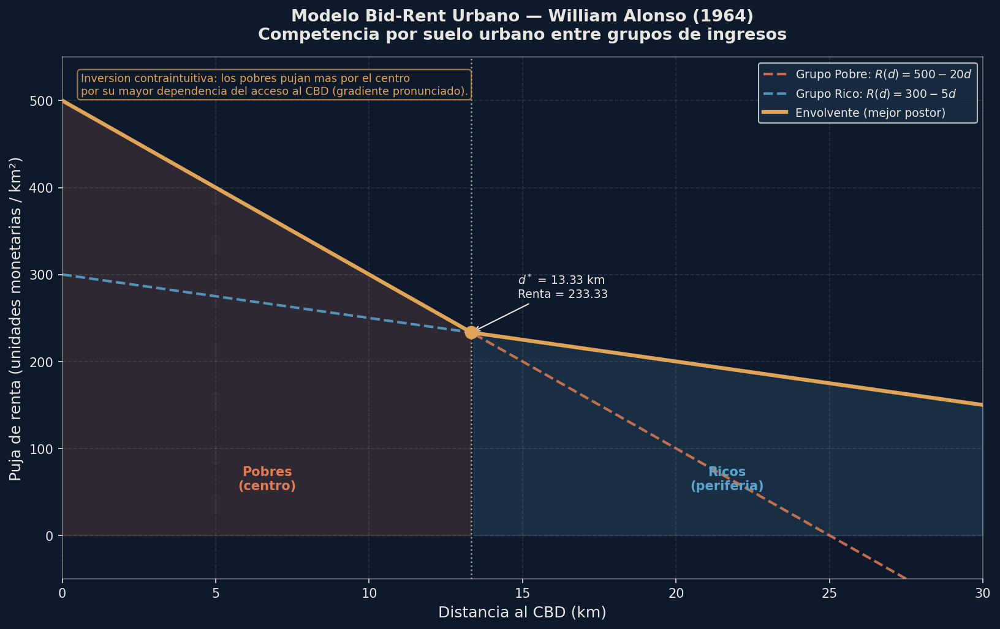
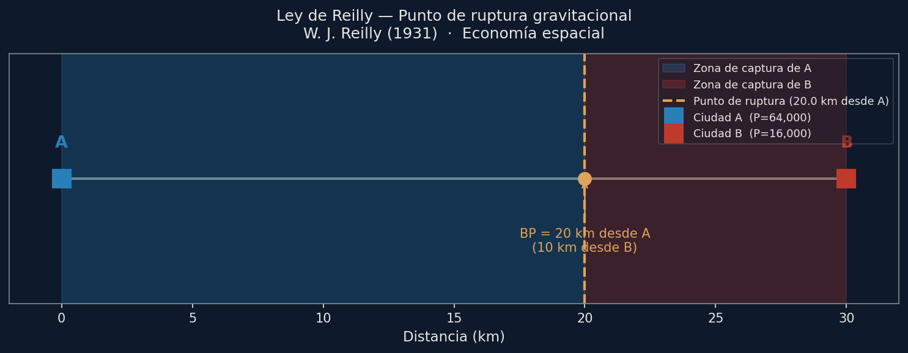
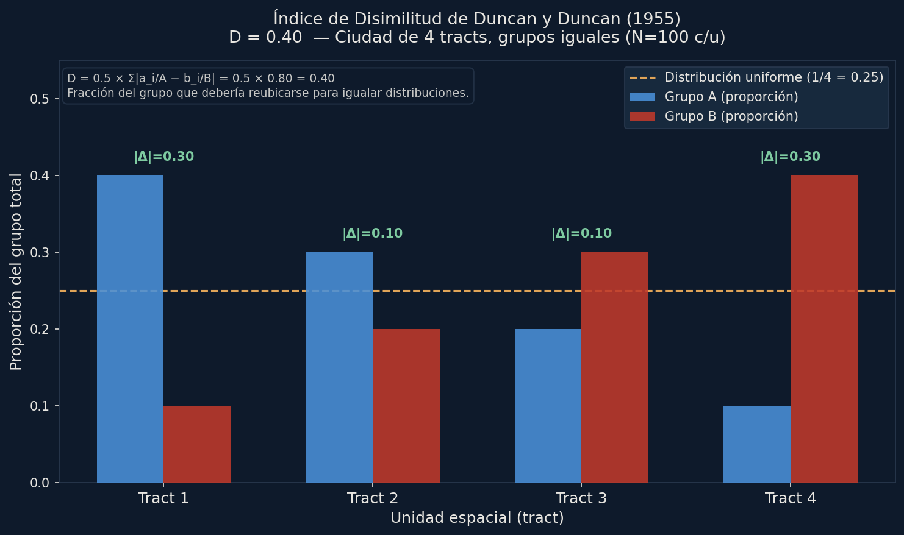
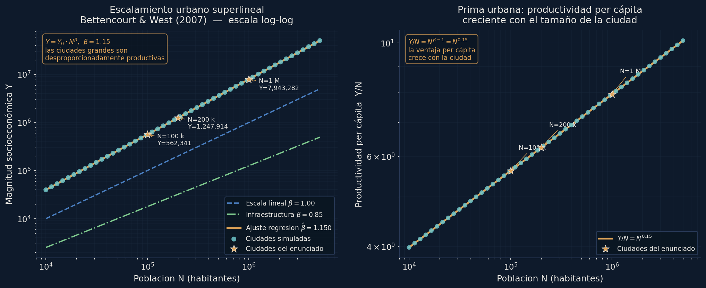
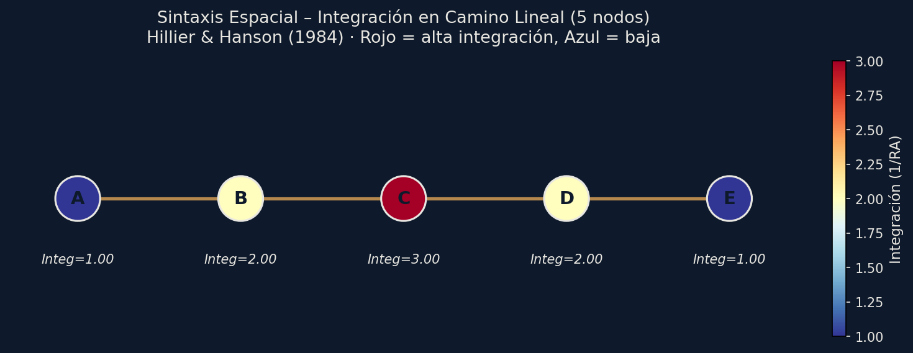

Yuk Hui
«Sobre el límite de la inteligencia artificial» (pp. 163–191)
Filosofía de la Ciudad · Unidad Urban AI · 12 de junio de 2026 · en pantalla: slide 1
La tesis · en pantalla: slide 1
Es un límite político y cosmológico: la cuestión no es cuánta potencia, sino quién computa, con qué cosmotécnica y a costa de qué soberanía.
Tres ejes filosóficos · en pantalla: slides 2–4
Toca cada eje para abrirlo.
Para Bergson la inteligencia es ante todo capacidad de fabricar herramientas: el homo faber exterioriza su pensamiento en objetos técnicos. La IA es el caso límite de esa exteriorización —una herramienta que se desprende y desborda la intención que la creó—. Pero ejecutar la operación no es habitar su sentido.
Concepto inteligencia fabricadora vs. impulso vitalWiener define la cibernética como ciencia del control y la comunicación; su núcleo es el feedback. Simondon radicaliza: el objeto técnico se constituye por la convergencia de sus funciones. Kant aporta la distinción fina: el juicio determinante aplica la regla al caso; el reflexionante halla la regla desde el caso.
La IA aplica reglas (determinante), pero no las genera desde el caso ni se da sus propios fines.
El mundo —en clave heideggeriana, según la lectura de Dreyfus— es un horizonte de significatividad, no un conjunto de datos: es aquello desde lo cual algo se vuelve relevante.
Lo que la IA no puede es decidir qué es relevante, porque carece de Dasein, de ese ser-en-el-mundo desde el que las cosas adquieren sentido.
Concepto Dasein · ser-en-el-mundoExperimento 1 · LLM vs. cómputo puro · en pantalla: slides 5–6
Seis modelos en gradiente —de 3B a Opus— contra cinco tareas computables y una inversa, sin herramientas. En paralelo, Python calcula la verdad exacta.
El 3B y el 32B empatan en 20%, y el 20B (40%) supera al 32B: la curva no es monótona. El salto es local → frontera, pero ni el mayor toca el 100% de Python —y Opus < Sonnet.
Matiz honesto: el conteo combinatorio (2.704.156 rutas) lo aciertan los seis, 2 de 2 —es memorizable—. La escala compra precisión en algunos regímenes; no cruza el umbral.
Fuente: experimento/resultados.json · 2026-06-10 · 6 modelos · sin herramientas · 2 intentos/modelo
Lo que ya sabemos computar · en pantalla: slides 7–8
Un portátil las corre todas, exactas, en 70,8 s y a $7,6×10⁻⁶ por respuesta. Ocho abren su simulación viva: toca para que arranque, y vuelve a tocar la simulación para ver sus datos canónicos.





Simulaciones vivas en navegador (window.VIZ) · datos canónicos en datos/<id>.json · catálogo: simulaciones/catalogo.json
Experimento 2 · Banco de teorías · en pantalla: slides 9–10
39 preguntas derivadas de las 13 teorías —3 por teoría— con verdad de referencia. Aquí la escala sí ordena más limpio… pero nadie llega al 100%.
Exactitud global por sujeto sobre 39 preguntas. La verdad sigue del lado del algoritmo.
Al separar las preguntas de forma cerrada (fórmulas memorizables) de las emergentes (exigen simular el sistema), aparece la grieta:
Lo emergente exige simular, no recordar. Ahí la IA estima un número plausible y el algoritmo acierta. La escala compra memorización de fórmulas; no compra ejecución del proceso.
Fuente: experimento/resultados_teorias.json · 2026-06-11 · 6 sujetos · 39 preguntas · sin herramientas · 1 intento
Experimento 2 · Costo · en pantalla: slide 10b
Abajo, el cómputo puro de Python: $7,6×10⁻⁶ por respuesta correcta. Arriba, Opus: $0,013–$0,070. Del orden de diez mil veces más caro —para una respuesta que sigue por debajo del 100% que Python da gratis y exacto.
Fuente: experimento/costos.json · medido (tiempo/GPU) + estimado (tarifa, API)
Lectura filosófica · · en pantalla: slide 11
Una calibración honesta: acertar una multiplicación no es «calcular». El modelo produce el token más plausible —a veces coincide con la verdad. No ejecuta el algoritmo.
Por eso Opus falla T5 por un dígito: respondió 651.397.404 y 651.400.404 frente al exacto 651.396.404. Consistente con producir el token plausible, no con ejecutar la suma.
T6 en espejo. Python no puede arrancar: no hay función objetivo —escribir el algoritmo de relevancia es el juicio que se pide—. Los modelos sí respondieron, y respondieron distinto: Sonnet→repartidor/niño, Opus→acompañante/niño, y qwen3:14b alucinó una «mujer mayor» inexistente en la escena. Hay relevancia, no unicidad: falta el mundo que la fije. Dreyfus en estado puro.
La escala no cruza el umbral. Si el límite fuera cuantitativo, subir de 3B a 32B debería acercarlo —y no lo hace: empatan en 20%, el 20B le gana al 32B.
Lo computable —lo recursivamente enumerable— es solo una tendencia de la inteligencia entre varias (Hui). Definir inteligencia = cómputo es tomar la parte por el todo.
Fuente: experimento/resultados.json · cifras exactas auditadas contra el texto primario
Eje filosófico 4 · Urban AI · en pantalla: slide 12
La smart city promete reducir la urbe a sensores, cálculo y gobierno algorítmico. Pero gobernar es una escena T6, no una tarea T1. Decidir a quién se alerta, qué barrio se prioriza, qué cuenta como riesgo —eso es juicio de relevancia, no cómputo—. Alguien fija primero qué importa, y esa fijación es política.
La IA gestiona —optimiza una función objetivo dada—. No gobierna —que es decidir cuál es la función—. La fijación de la función objetivo es política.
Hui + Schmitt: la fantasía de la superinteligencia es, con Carl Schmitt, la forma más avanzada de neutralización y despolitización por la técnica. Se presenta como cálculo neutral lo que es, en realidad, una decisión sobre el mundo.
Mou Zongsan (según Hui): distingue zhineng (inteligencia) de zhihui (sabiduría) y rescata la intuición intelectual —el sujeto moral que ve la interconexión del cosmos en vez de descomponerlo analíticamente—.
Tesis final de Hui: el desafío no es la superinteligencia, sino hacer posible una noodiversidad —una diversidad de inteligencias—. Para eso hace falta tecnodiversidad como política de descolonización. Cosmotécnica es el concepto analítico; tecnodiversidad, la propuesta normativa.
Que los cuatro locales corrieran en una workstation propia no es anécdota: es la condición material de esa tecnodiversidad.
Hui, «Sobre el límite de la IA», pp. 163–191 · Schmitt y Mou Zongsan referenciados en el capítulo
La tesis · en pantalla: slide 13
La tesis, en tres movimientos.
Disponemos de herramientas epistémicas sobredimensionadas respecto de su aplicación efectiva. Un portátil corre las 13 teorías urbanas clásicas en 70,8 s y a $7,6×10⁻⁶ por respuesta correcta. El cómputo a gran escala —cuatro órdenes de magnitud más caro— no produce un salto epistémico proporcional a su costo material, energético y político.
Las restricciones decisivas de la urbanidad computada son políticas, económicas y ontológicas: quién computa, con qué cosmotécnica, a costa de qué soberanía. No se resuelven con más parámetros.
La tarea pendiente: hacer presentable, usable y aplicable el conocimiento urbano clásico que ya tenemos. El Banco Epistémico Urbano es la contribución concreta —un banco de pruebas reproducible que enfrenta modelos urbanos clásicos computables contra IA estadística.
Ironía deliberada: esta tesis se construyó orquestando IA bajo supervisión humana. Evidencia performativa de su propio argumento: la IA rinde solo bajo un horizonte humano que decide qué importa.
tesis/ — construida orquestando IA bajo supervisión humana
Cierre · en pantalla: slide 14
Lo que falta no es un modelo más potente, sino aplicar: hacer usable el conocimiento urbano clásico que ya existe. El límite es político, económico y ontológico —quién computa, con qué cosmotécnica, a costa de qué soberanía—.
Aplicar antes que escalar · fragmentar antes que optimizar
Construido orquestando IA bajo supervisión humana —evidencia performativa de su propio argumento: la IA rinde solo bajo un horizonte humano que decide qué importa.
· versión móvil de la ponencia completa ·